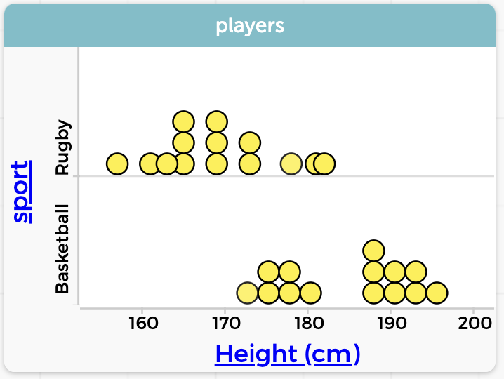
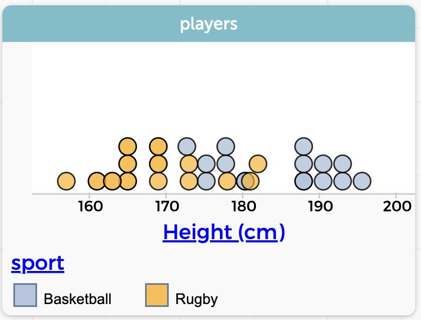

4 Trees and graphs
How should you decide how to build a tree? What attributes should you drag in? How do you pick a cut point?
You could just try things, but it often helps to make graphs: graphs that show the relationship between the attribute you’re wondering about and your target variable.
For example, here are two graphs of the same data showing the height of 28 professional athletes and what their sport is. In this case, all of these athletes play either rugby or basketball. That attribute, sport, is our target variable. That is, we are trying to use height to predict what sport they play.


Two ways to show sport and height. As we might expect, basketball players are generally taller.
Which display is best? You will have to decide what works for you. Be sure you remember that you have a choice!
We could use either graph to decide on a cut point. It looks as if it’s something like 175 cm.
In the live example, experiment with different graphs. For example, do you think weight might be as good or better than height for separating basketball players from rugby players?
Be sure to try making a graph with a legend. To make a legend (and color the points), plop an attribute in the middle of a graph.
Don’t be afraid to make multiple graphs. You might want to minimize or shrink the tree to make room!
Time for an exercise! In the live example make a tree…
- …that’s predicting
sport - …that branches on
height - …at a number near 175 cm
- …and that predicts that the taller athletes play basketball, and the rest rugby.